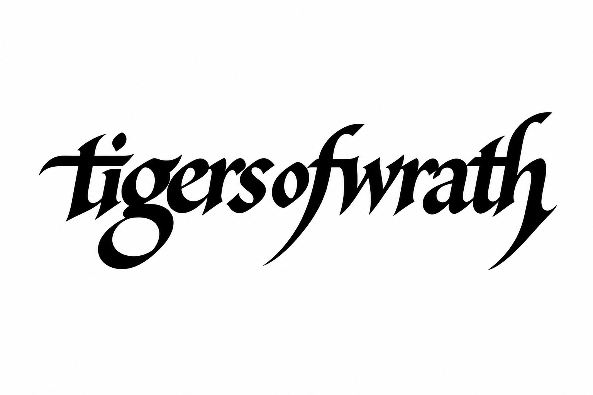

Projects
THE ONLY THING THAT CARRIES WEIGHT — SELECTED POEMS (2009–2019) TARLLC — VAYOTS DZOR, ARMENIA (2015–2023) LADA NIVA 21213 — VAYOTS DZOR, ARMENIA (JANUARY 2022) Contact Us

Contact
Contact details to follow.

Contact details to follow.